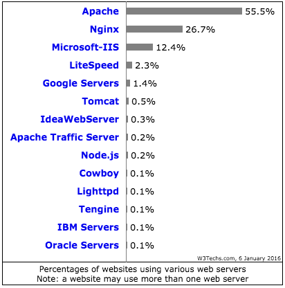

Alojamiento y servidores HTTP
Para este curso nos vale con entender las siguientes definiciones (informales):
- Servidor web HTTP (o simplemente: servidor web o servidor HTTP): es un programa que se encarga principalmente de las comunicaciones con el navegador1. Envia y recibe mensajes y archivos.
- Un alojamiento web (web hosting o hosting): es un ordenador2 conectado a Internet3 (normalmente 24 horas, 7días a la semana) en el que hay instalado entre otros programas, un servidor HTTP y al que podemos solicitarle recursos. Comúnmente también se le llama: servidor.
En este curso usarás tu máquina como servidor mientras estés haciendo pruebas, y posteriomente usarás el hosting gratuito y el servidor HTTP que ofrece Github para entregar los ejercicios.
En el apartado Peticiones HTTP veremos en detalle cómo se comunica un servidor que tenga un servidor HTTP instalado con nuestro navegador.
Algunos de los servidores webs y empresas que ofrecen alojamiento web:
- Alojamiento web: 1and1, AWS, Linode, etc. (ver más)
- Servidores web: Apache, Nginx y IIS, etc. (ver más)
A continuación tienes una gráfica que muestra el porcentaje de los servidores web más usados:

Fuente: w3techs - 6 de Enero de 2016
Aclaraciones:
1. No siempre tiene que ser con un navegador, puede ser con otro tipo de software.
2. Hay muchos tipos de hosting, aunque a nosotros nos vale con esta definición
3. También podría estar conectado a una intranet (o red local)